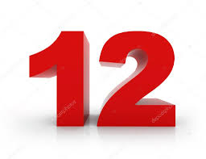

Laço de Repetição
Curiosidades sobre numeros de 0 a 100
1-O conceito de zero surgiu na Índia antiga, e foi fundamental para o desenvolvimento da matemática e da computação.
2-O número 7 é considerado um número da sorte em muitas culturas ao redor do munda.
3-Doze é um número altamente divisível, o que o torna popular em sistemas de mediação de tempo (12 meses, 12 horas em um relógio
 11 Zeros